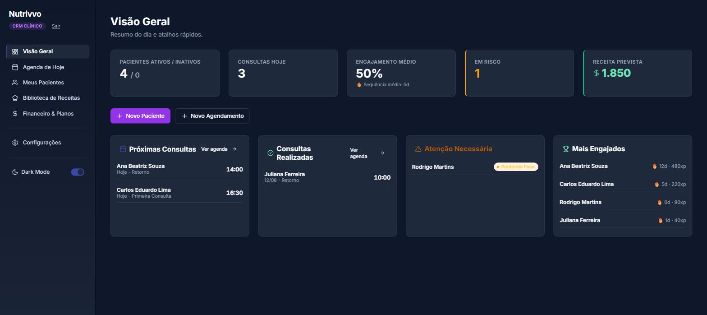
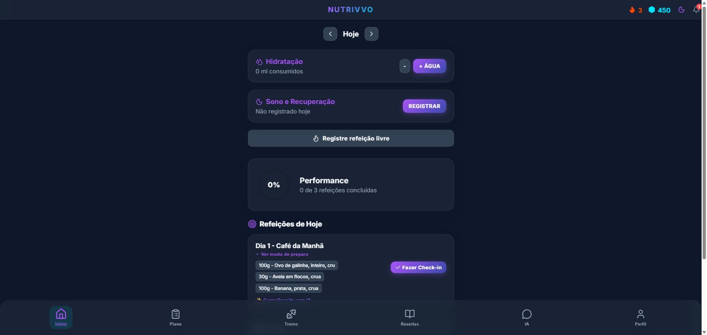

Estilo A
TerraSprint
Editorial e orgânico: serifa, verde-folha e tons quentes.
Extraia o arquivo .zip antes de abrir. Você abriu o índice de dentro do .zip, por isso os links dos estilos não funcionam. Clique com o botão direito no .zip, escolha “Extrair tudo…” e abra o index.html da pasta extraída.
Quatro direções visuais, cada uma com a landing, o app do nutricionista e o app do paciente. O conteúdo e os dados são os mesmos (fictícios); muda só o visual.
Como aprovar: abra os três links de cada estilo, compare e responda com a letra do estilo escolhido (A, B, C ou D) e o que gostaria de ajustar.
Estilo A
Editorial e orgânico: serifa, verde-folha e tons quentes.
Estilo B
Escuro premium: verde-floresta sobre quase-preto, tipografia leve.
Estilo C
Acolhedor: creme, verde profundo e pastéis arredondados.
Estilo D
Denso e preciso: neutros stone, âmbar e tabelas compactas.
As telas reais do Nutrivvo em produção, para comparar com os estilos acima. Os 4 estilos redesenham estas mesmas telas.


Protótipos estáticos para validar o visual. Nenhum dado é real.